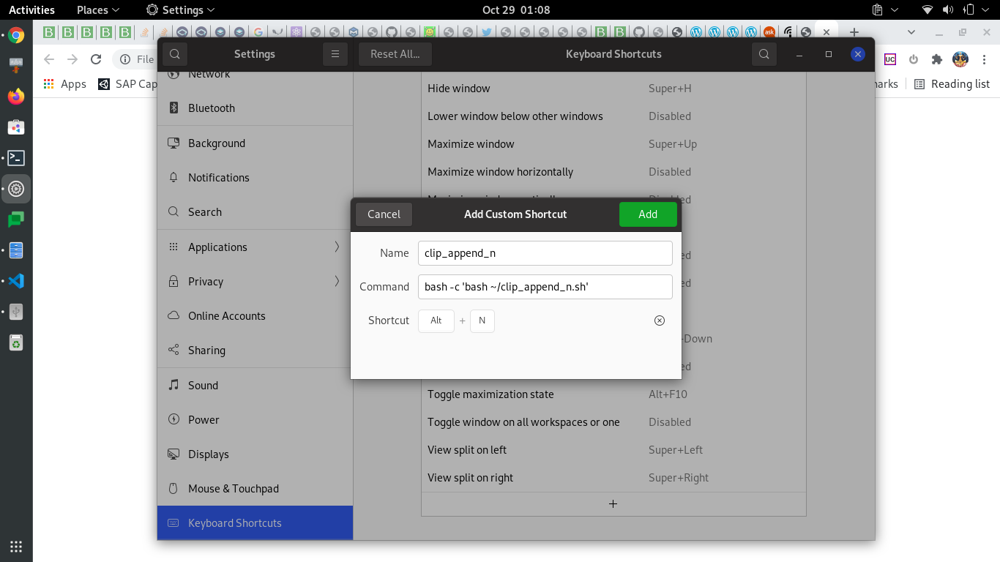

clip_append_n.sh which essentially does that.
#!/bin/bash
# text under selction i.e. highlighted
p=$(xclip -selection primary -o)
# text already in the clipboard , (what happens if there is image in clipboard?)
c=$(xclip -selection clipboard -o)
# seperator
sep=$'\n'
echo "$c$sep$p" | xclip -selection clip
notify-send --expire-time=1000 "ClipAppend" "Appended with newline"
# ubuntu ignores that expire time option hence - workaround hack
sleep 1
pkill notify-osd
Install xclip if not already installed.
sudo apt install xclip+ sign to define your key combination.
In the command field, add the following
bash -c 'bash ~/clip_append_n.sh'
I currently use ALT+N to trigger the action appending
highlighted content to clipboard with a newline as a seperator.
On ubuntu 20

Similarly, we can duplicate the above script with different seperators (\s, \t) and
can use ALT+S, ALT+T to trigger the action of appending
highlighted content to clipboard with a space, tab as a seperators respectively.